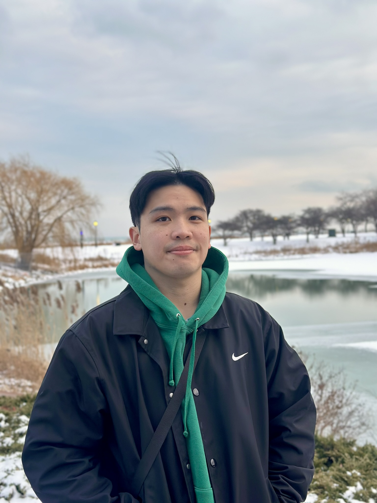
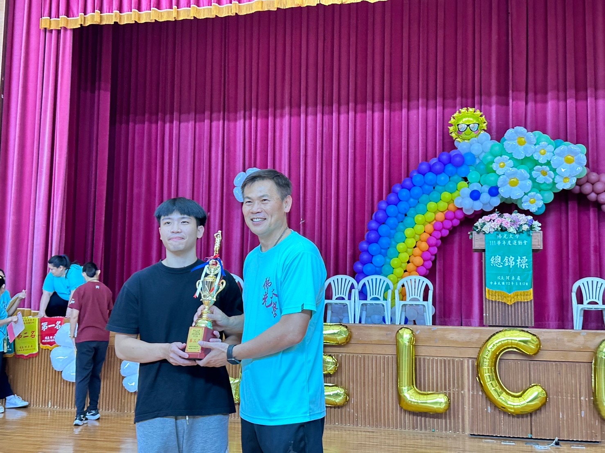
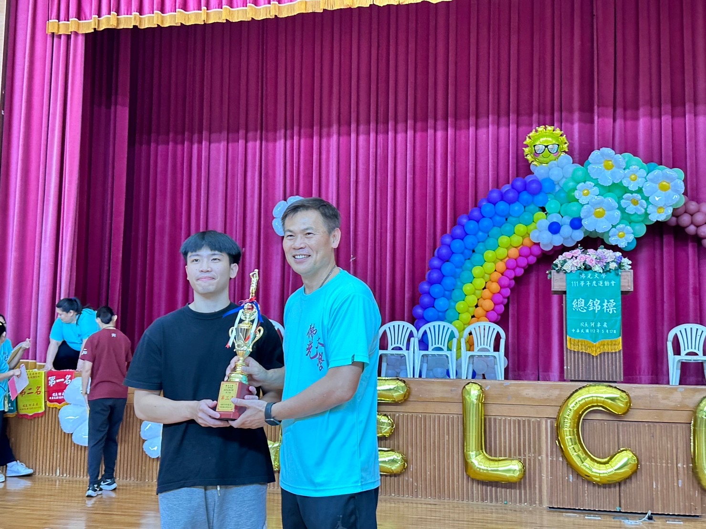

Hi, I’m Kevin (Jen-Kai) Wang
I’m currently a CS grad student at Illinois Tech
I’m passionate about using code to create meaningful and interesting projects.
Thanks for stopping by!!
Contact me: jenkaiwang@gmail.com





 
